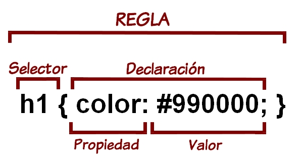

QUE ES CSS
El CSS (hojas de estilo en cascada) es un lenguaje que define la apariencia de un documento escrito en un lenguaje de marcado (por ejemplo, HTML).
Así, a los elementos de la página web creados con HTML se les dará la apariencia que se desee utilizando CSS: colores, espacios entre elementos, tipos de letra, ... separando de esta forma la estructura de la presentación.
Esta separación entre la estructura y la presentación es muy importante, ya que permite que sólo cambiando los CSS se modifique completamente el aspecto de una página web. Esto posibilita, entre otras cosas, que los usuarios puedan usar hojas de estilo personalizadas (como hojas de estilo de alto contraste o de accesibilidad).
El W3C define las especificaciones del estándar CSS. Después, los navegadores intentan implementar esas especificaciones, para que las páginas web se vean igual en todos ellos.
Los navegadores cada vez cumplen más y mejor el estándar CSS. Por ejemplo: Internet Explorer 6 cumplía el estándar en sólo un 12% mientras que Internet Explorer 9 lo cumple en un 95%. Por eso se deben maquetar las páginas web siguiendo el estándar CSS y no las especificaciones de un navegador determinado. También hay que procurar mantener actualizado el navegador, ya que a medida que van cumpliendo el estándar, van añadiendo funcionalidades que antes no tenían.
SELECTORES EN CSS
El selector CSS (Cascading Style Sheet) es el nexo de unión entre la hoja de estilos y los documentos a los que se aplique dicha hoja. Ya sean (x)HTML, XLM, SVG... y con independencia del medio en que se muestre (media type).
Del conocimiento y buen manejo que se haga del selector CSS dependerá la eficiencia de la hoja de estilos y en muchos casos el poder lograr lo deseado sin necesidad de recurrir a otros lenguajes.
Un detalle más que significativo de su importancia del selector en CSS lo da el hecho de que hemos pasado de tener unos 20 selectores en CSS2 a más de 70 en el último documento en discusión.1
El selector CSS es el identificador en la hoja de estilos del elemento o elementos del DOM a los que se aplicarán las declaraciones contenidas en la regla de la que forma parte dicho selector.
Como curiosidad, en algunas partes, al elemento del DOM al que aplica el selector CSS se le llama sujeto del selector.

ESTILOS EN CSS
Cuando se habla de apariencia estética o cambios visuales de una web siempre se mencionan los estilos CSS. Vamos a explicar un poco qué son y para qué sirven. CSS es el lenguaje para describir la presentación de páginas web, por ejemplo los colores, el diseño y las fuentes. Nos permite adaptar la presentación a las diferentes necesidades y tipos de dispositivos. El CSS es independiente al HTML y se puede utilizar con cualquier lenguaje de marcado basado en XML. La separación del código HTML de CSS hace que sea más sencillo mantener los sitios, y las hojas de estilo que influyen en una o varias páginas. Esto se conoce como la separación de la estructura de la presentación.
Actualmente encontramos dos tipos de estilos:
Internos
CSS encerrado en etiquetas style> /style> dentro de un documento HTML funciona como una hoja de estilo externa, excepto que vive en el documento HTML que diseña en lugar de en un archivo separado, y por lo tanto solo se puede aplicar al documento en el que está vive. Tenga en cuenta que este elemento debe estar dentro del elemento
para la validación de HTML (aunque funcionará en todos los navegadores actuales si se coloca en el body ).
Externos
Una vez creado, basta incluir un link a ese archivo .css en cada página que queramos aplicar estos estilos. De esta forma, una misma hoja de estilos puede aplicarse a cualquier número de páginas web, simplemente incluyendo en todas ellas el link correspondiente.
Como cualquier link, la localización del archivo CSS puede ser absoluta o relativa, dependiendo de su ubicación dentro del propio sitio web, o en otra dirección.
El link siempre debe insertarse dentro de las etiquetas HEAD del encabezamiento de la página Web: